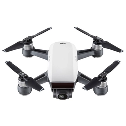
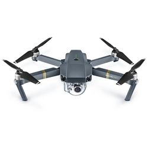

Квадрокоптер DJI Mavic Pro

Описание
У нас вы можете купить квадрокоптер Квадрокоптер DJI Mavic Pro от официального дилера с доставкой по Москве и всей России, а также вы можете ознакомиться с видеообзором, инструкцией и характеристиками.
Компания DigBox.ru является официальным дистрибьютором DJI Inovations в России. Мы предлагаем самый высокий уровень поддержки продаж и сервиса. Вся продукция сертифицирована для использования в России и имеет полноценную гарантию от производителя. Закупки по несанкционированным каналам аннулирует бесплатную гарантию данных устройств в России.
Характеристики
- Время полёта (мин) - до 30;
- Эффективных пикселей (Мп) - 20;
- Спутниковая навигация - GLONASS и GPS;
- Макс. скорость полета (м/с) - 20;
- Макс. рабочая высота полёта от пилота (м) - 500;
- Механический затвор - Есть;
- Электронный затвор - Есть.
| Основные параметры | |
| Тип мультикоптера: | квадрокоптер (4 винта) |
| Максимальная скорость набора высоты: | 5 м/c |
| Максимальная скорость снижения: | 3 м/c |
| Максимальная скорость полета: | 18 м/c |
| Встроенные датчики: | GPS, ГЛОНАСС, акселерометр, датчик высоты, магнитометр, ультразвуковой датчик, оптический датчик |
| Бесколлекторный двигатель: | есть |
| Профессиональная модель: | есть |
Подробное описание квадрокоптера
DJI Phantom 4 Pro имеет конструкцию из титанового сплава, что обеспечивает ему прочность, но при этом снижает вес. Новая усовершенствованная камера оснащена 1-дюймовым 20-мегапиксельным сенсором и способна снимать 4K 60к/с видео и до 14 фотографий в режиме серийной съемки. Особенностью аппарата является новая технология автономного полета – FlightAutonomy, которая имеет двойные задние и передние датчики видения и инфракрасные системы, обеспечивающие в общей сложности зондирование по пяти направлениям с автономным облетом препятствий в четырех направлениях.
| С этим дроном так же смотрят | |||
| Квадрокоптер DJI Spark |  | Квадрокоптер DJI Phantom 4 PRO |  |
|
|
||
| Цена: 73 890 ₽ | Цена: 30 400 ₽ | ||